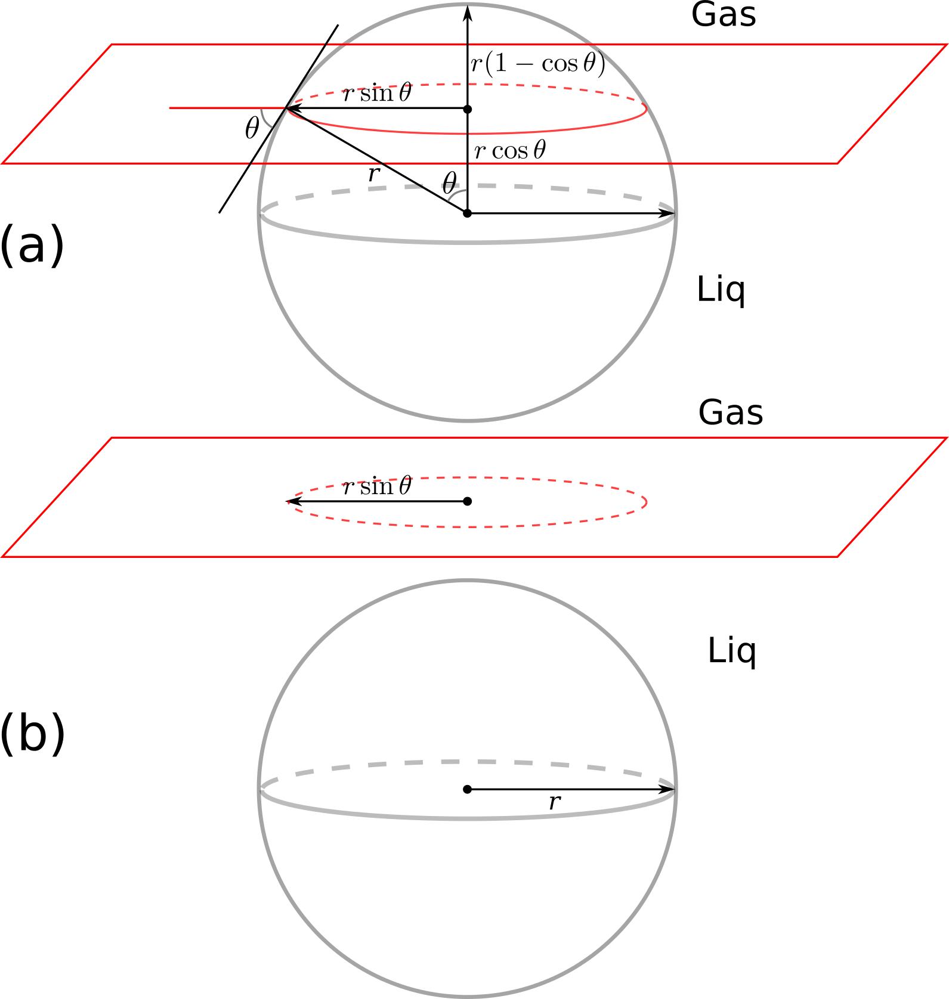

A nanoparticle at the gas-liquid interface: using Sympy
My post-doc research was about nanoparticle-stabilized foam for enhanced oil recovery. Foam is usually generated by blowing gas into a surfactant-water solution. Surfactant molecules go to the gas-liquid interface and prevent (or slow down) the drainage (sort of) and collapse of the liquid films. Mixed-wet particles act like surfactants. When they go to the interface, the amount of energy that is required to move them back to the gas or liquid phase is a few orders of magnitude higher than the thermal energy of the particles, which makes the liquid film generated by nanoparticles quite stable. There is a classic relation for the desorption energy (or the amount of energy to move the particles from the interface to a bulk phase). Few weeks ago, I was discussing the stability of nanoparticle-foam with a colloid-chemistry Professor who shortly visited our department during his trip to Delft. He pointed out that this relation may be wrong, as it seems that it does not consider all the gas-liquid, gas-solid, and liquid-solid interactions. I tried to derive the equation for myself, and I thought it is a good time to play with Sympy and SymPy.jl. First, install sympy by
sudo pip install sympyand install SymPy in Julia by
Pkg.add("SymPy")Now have a look at the following figures: part (a) shows the particle at the interface and part (b) shows the particle removed from the interface to the aqueous phase:

using SymPy
First, we define all the symbolic variables:
gama_gw, gama_sw, gama_sg, r, teta=symbols("gamma_gw, gamma_sw, gamma_sg, r, theta")
The interfacial energy in part (a) is calculated by surface area multiplied by the inerfacial energy of the respective phases:
E1=2*PI*r*r*(1-cos(teta))*gama_sg+(4*PI*r^2-2*PI*r*r*(1-cos(teta)))*gama_sw
We do the same for the part (b) of the figure, where the particle is in the liquid phase:
E2=gama_sw*4*PI*r^2+gama_gw*PI*(r*sin(teta))^2
The difference between the total interfacial energy of state (a) and (b) is calculated by:
dE=E2-E1
We can simplify the above equation by using the Young-Dupre equation, which reads $$\gamma_{sg}=\gamma_{sw}+\gamma_{gw}\cos(\theta)$$
dE2=subs(dE, gama_sg, gama_sw+gama_gw*cos(teta))
Now we simplify the equation in sympy:
simplify(dE2)
Voila! Normally the equation is reported as $$\Delta E=\pi \gamma_{gw} r^2 (1-\cos(\theta))^2,$$ which is identical to what we obtained above. Have a look at this tutorial to learn more about symbolic mathematics in Python and Julia.
Comments
Comments powered by Disqus